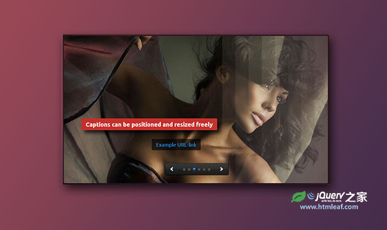

jQuery支持触摸屏的强大响应式轮播图插件
A Modern jQuery slider for your project
jQuery之家
返回下载页
Standart Slideshow
Standart Slideshow Vertical
Standart Slideshow Fade
Text Pagination
Text Pagination Vertical
Image Pagination
Show Next and Previous Slide
Sample Video Background
Sample Textbox
Slideshow with API button
你的浏览器不支持 HTML5 video.
你的浏览器不支持 HTML5 video.
你的浏览器不支持 HTML5 video.
如果你喜欢这个插件，那么你可能也喜欢:
jQuery和CSS3响应式网站导航幻灯片插件

支持移动设备的响应式多功能jQuery幻灯片插件